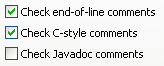
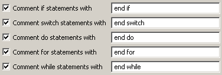
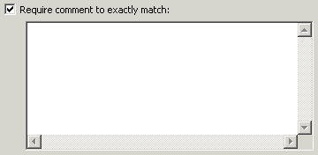

Audit - Rules - CommentsDescriptionThis group contains audit rules that look for the correct usage of non-Javadoc comments within your code. |
| Rules: |
Summary
Code that has been commented-out should be removed.
Description
This rule searches for comments that appear to contain code and flags them. Such code should either be removed or made conditional (for example, by testing a logging level).
Example
The following comment would be flagged:
//System.out.println("Entering method");

Summary
Local variables should be commented.
Description
This audit rule checks for local variable declarations that are not followed by an end-of-line style comment. The comment is intended to describe the purpose of the variable.
If there are multiple local variables declared on a single line, the comment (if there is one) is assumed to belong to the first variable.
Example
The following local variable declaration would be flagged because it is not commented:
int sum = 0;
Summary
Closing braces should be documented with a comment.
Description
This audit rule checks for closing braces for specified statements that are not followed by a specified end-of-line comment. The comments are used to make it easier for readers to see the structure of the code.
Example
The closing brace for the following if statement would be flagged as needing to be commented:
if (employee.isHourly()) {
...
}

Summary
Compilation units should have a file comment.
Description
This audit rule finds compilation units that do not have a comment as the first element in the file.
Example
A file that begins with a package statement would be flagged as a violation because a comment is expected to appear before anything else.
